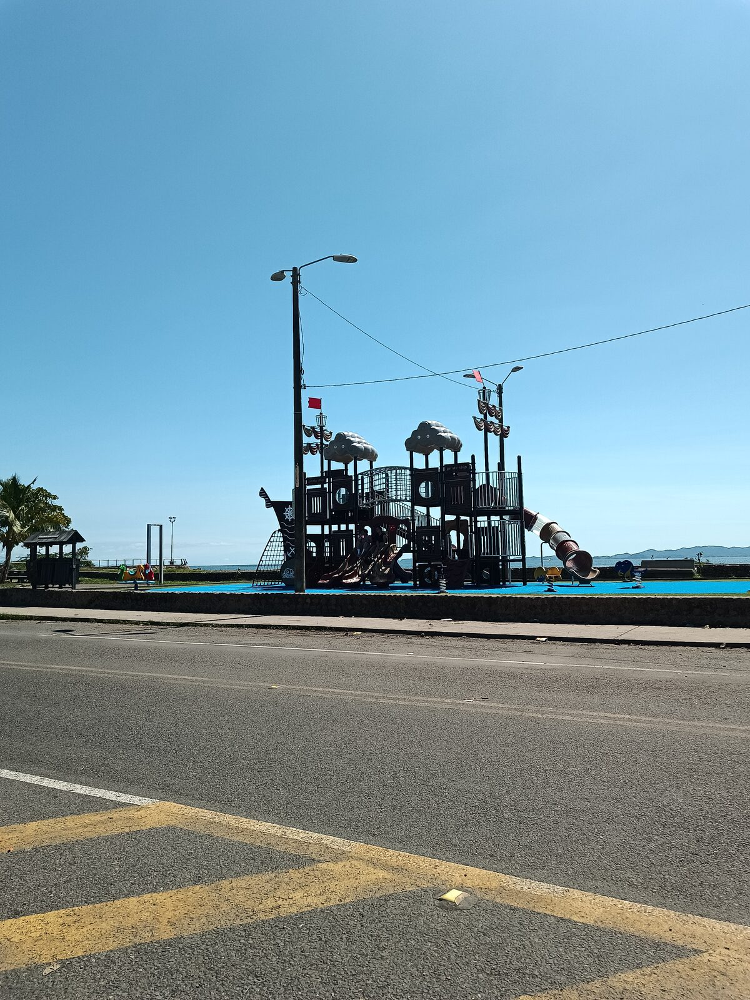
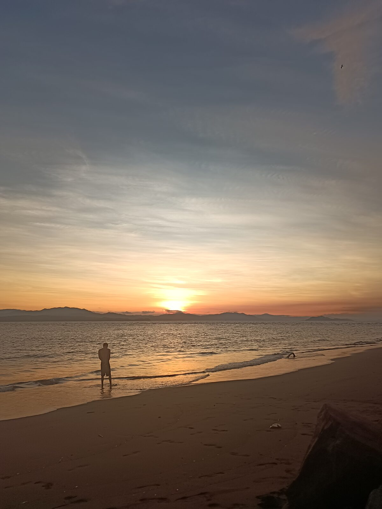

日落与美食
今天我真的起得很早（对我来说算早，你们懂的 哈哈哈），因为我们要去太平洋海洋公园（Parque Marino del Pacífico）。那里不只是个漂亮的水族馆，还是野生动物救助康复中心。我看了他们的 Instagram，太美了！
我们到了门口……关门了。周一不开放 哈哈哈哈。


于是我们去吃午饭、顺便工作。我正在为 BioReto 设计挑战题，这是哥斯达黎加的一场黑客松：一个模拟的细菌培养箱，每个队伍都要让自己的菌落长起来。感兴趣的话，详情都在 bioreto.hazloahora.org。不过嘛，一个下午就这么过去了。


🐱🐱🐱🐱 午餐：4 只 Ada（满分 5）。 很好吃，但很贵。
等我终于从电脑前抬起头，蓬塔雷纳斯送了我们这样的景色：



看完这些日落，我们和朋友 Aaron 约了晚饭，他是哥斯达黎加大学（UCR）系统工程系的教授。我们又去了 El Chicharrón del Coco，因为昨天的塔可值得再战一次。

AI 时代，教育怎么了？
我们聊起他怎么面对向 AI 的转变，他很担心地对我说：
“老兄，我已经不布置作业了，因为他们全都用 AI 做。”
他不反对学生用 AI，反正以后工作也会用。他担心的是，他们不明白背后那些东西为什么重要。他说他收到过一切都能运行的项目，但当他问这些年轻人“来，这段是干什么的？”或者“好，给我写个这条查询的筛选”，他们却做不出来。说到底，这让人失望。
所以他现在把课程引向实践：让学生理解东西是怎么做出来的、结果怎样、为什么。结果有个学生一脸淡定地问他：“那我干嘛要学？”哈哈哈哈。
这让我想起那些在大学教书的朋友们的抱怨，也想起我自己在 2026 年初经历的危机。刚开始用 AI 时我被震撼到了，心想：既然一切只差一个提示词，AI 还能讲得更好、更有耐心，我何必继续上课、办工作坊、做演讲？谁都能做到。
但原来有个说法叫“facilución”，是高能力人群中常说的一个概念：我们以为一切都很简单。其实并不是！但我们就是这么以为 哈哈哈。于是我把一切都拿来检验，也请教了很多同行，发现每个人教学、投入教学的方式都不一样。我甚至听说有人教书是为了感受被爱，有人是为了觉得自己重要，纯粹是自我，这也无可厚非。
那场危机让我明白，教与学中真正重要的是情感。Claude 和 ChatGPT 可以拥有世界上所有的信息，但如果背后没有情感，就没有学习。重要的是人与人的互动：有人参与，就会带来启发，而这可能改变一个人的未来。我就是这样走出那场危机的。
所以想问问你们：哪位老师教会了你们一些任何提示词都教不了的东西？
👆 点击地图上的任意一个点，即可阅读当天的章节。